COMPOSITION
The vehicle exterior lighting system has been designed and produced with two objectives in mind:
- guaranteeing maximum efficiency with regard to the international regulations that define the lighting technology specifications for the various components;
- being integrated with the design of the vehicle so that the various components enhance the image.
Location of components on vehicle
The vehicle components and their location are illustrated below.
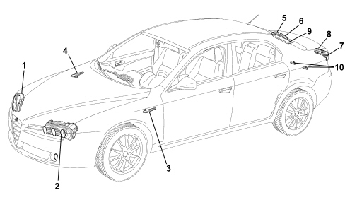
1 - Right front light cluster
2 - Left front light cluster
3 - Left front direction indicator
4 - Right front direction indicator
5 - Right rear light cluster (fixed part)
6 - Right rear light cluster (moving part on boot)
7 - Left rear light cluster (fixed part)
8 - Left rear light cluster (moving part on boot)
9 - Third brake light
10 - Number plate lights
Front light cluster (halogen version)
The unit consists of:
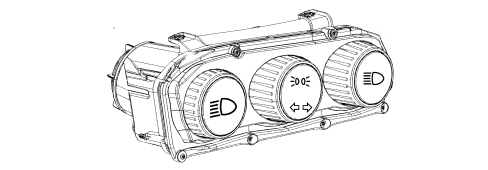
The front light cluster is a lamp made using a special lens reflection technology.
There are three separate functions in the form of chrome covers incorporated in a single casing.
The casing is made from polypropylene and has three points fitted with metal inserts for ensuring the torque tightening on the metal crossmember.
It includes a cover securing the lens, the housings for the electrical corrector, the adjustment screws and the bulb access covers.
There is an automatic type electrical corrector (electric motor) in the unit for controlling the headlight alignment with an activation control in the instrument panel.
The reflector is made from a thermal hardening material and includes the seats for the elliptical module (dipped headlamps) whilst the side light, direction indicator and main beam headlamp functions are produced through calculated surface areas.
The lens is made from polycarbonate and incorporates the housings for fastening the chrome frames and the (black) outer surround treated with scratch-resistant paint.
Bulbs present:
- H7LL halogen bulb for dipped headlights function -12V-55W
- All glass W5W bulb for side lights function -12V-5W
- All glass PY21W bulb for direction indicators function - 12V-21W
- H7 halogen bulb for main beam headlights function -12V-55W
Rear view.
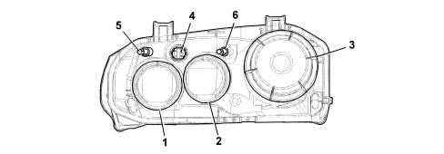
1 - Cover for main beam headlamp
2 - Cover for direction indicators and side lights
3 - Cover secured by catch and seal for dipped headlamp
4 - 14-way connector for lamp power supply
5 - Bevel pinion / adjustment screw for lamp horizontal axis
6 - Bevel pinion / adjustment screw for lamp vertical axis
Wiring diagram and connector
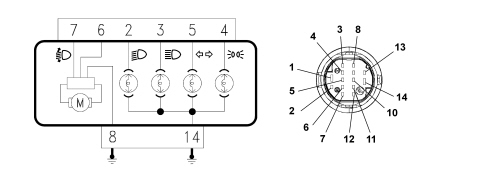
PIN OUT:
2- Dipped headlamps control
3 - Main beam headlamps control
4 - Side lights control
5 - Direction indicators control
6 - Power supply for headlamp alignment corrector
7 - Headlamp alignment correction signal
8 - Earth connection for headlamp alignment corrector
14 - Bulb earth connection
Electrically controlled headlamp alignment corrector
The headlamp alignment device is designed to adjust dipped light beam correctly in a vertical direction irrespective of the load on the axles.
With the dipped headlamps on, using the wheel in the contol panel on the left side of the driver, it is possible to alter the angle/direction of the light cluster in 4 standard positions: the following loads correspond to the four positions:
0 - 1 person (driver), 2 persons (in the front seats)
1 - 5 persons, 2 persons (in the front seats), 3 persons (in the rear seats)
2 - 5 persons plus maximum load
3 - 1 person (driver) plus maximum permitted load in luggage compartment without rear seat folded down
The maximum load refers to: the maximum permitted load on the rear axle or: the total permitted load for the vehicle.
The weight of a person is taken as 75 kg.
Front light culster (gas discharge - xenon version)
The need to improve the performance of current systems based on halogen bulbs in terms of the light energy emitted and the spectral distibution and life of the bulb has led to the development of gas discharge headlamps technology and the devices that allows its operation on the vehicle.
There are basically three types of advantage from the development of this technology:
- the increased light efficiency allows a reduction in the absorption of electrical energy;
- the high light flow emission makes it possible to reduce the dimensions of the light cluster (in particular the height) with greater freedom in the design of the front section;
- the bulb lasts, on average, twice as long as a halogen bulb.
The technology of gas discharge headlamps has led to the development of a series of devices that include:
- xenon bulbs;
- optics (reflective surface of the headlamp);
- electronic control (ballast);
- automatic light beam alignment correction.
Traditional lamp light beam (isolux curve).
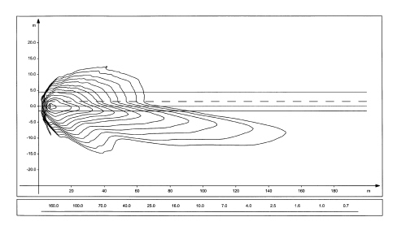
Discharge lamp light beam (isolux curve).
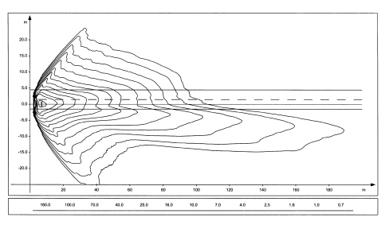
Every light cluster includes the components necessary for the operation of the discharge bulb (bulb, igniter, control unit, control motor): the traditional components are also present (side lights, direction indicators, main beam).
The unit consists of:
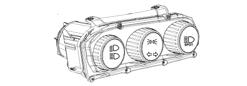

|
The spot main beam only comes on through the flasher control with the main beams switched off, whilst it is turned on together with the xenon bulb with the lights are switched from dipped to main beam. |
The front light cluster is a lamp made using a special lens reflection technology.
There are three separate functions in the form of chrome covers incorporated in a single casing.
The casing is made from polypropylene and has three points fitted with metal inserts for ensuring the torque tightening on the metal crossmember.
It includes a cover securing the lens, the housings for the electrical corrector, the adjustment screws and the bulb access covers.
The reflector is made from a thermal hardening material and includes the seats for the elliptical module (dipped/main beam headlamps) whilst the side light, direction indicator and main beam headlamp functions are produced through calculated surface areas. It is painted, metalized and protected.
The lens is made from polycarbonate and incorporates the housings for fastening the chrome frames and the (black) outer surround treated with scratch-resistant paint.
The switching between the dipped and main beam functions for xenon bulbs takes place by means of a suitably shaped metal screen that is lowered for dipped operation and raised for main beam operation.
Bulbs present:
- D1S xenon bulb for dipped headlamps function
- All glass W5W bulb for side lights function -12V-5W
- All glass PY21W bulb for direction indicators function - 12V-21W
- H1 halogen bulb for main beam headlights spot function 12V-55W.
One of the two lamps carries out the MASTER function (left): the sensors, that detect the vehicle geometry are connected to it whilst the other (right) lamp has a SLAVE function and is connected to the MASTER lamp by a special serial line:
Xenon bulb
Xenon bulbs consist of a bulb containing two electrodes spaced a few millimetres apart and filled with low pressure xenon gas.
The emission of light is produced by an arc between the two electrodes which is maintained during the operation of the bulb; this process is similar to what takes place in neon lights.
Unlike the latter however, in automotive applications, it is unthinkable to have to wait for a few minutes before the process stabilizes, therefore the light cluster has an electronic control device (control unit) that allows operation, as far as the warming up times are concerned, comparable to traditional headlamps.
Operation
The operation of a xenon bulb is divided into four stages.
- Ignition: During this stage the ballast produces a voltage capable of causing the engagement of a suitable device located in the igniter. A step-up transformer circuit transfers the suitably amplified excess voltage to the bulb thereby causing a discharge between the electrodes.
- Take-over (arc maintenance) during this stage (lasting several seconds) the bulb receives the excess power supply necessary for producing the rapid evaporation of the metallic halides contained in the bulb in order to guarantee that the operating brightness is reached quickly. In these conditions the bulb produces a light flash that is twice the intensity of normal for a period of about 100 microseconds.
- Warm up for a period of about two minutes, the ballast regulates the light intensity determining the physical state of the bulb from its impedance properties (closed loop control).
- Steady state: the light beam is controlled continuously in closed loop in the steady state.
The igniter is located in the base of the actual bulb, whilst the ballast is located in the control unit.
Lamp rear view
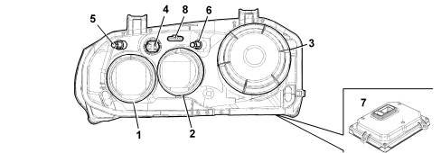
1 - Cover for main beam headlamp
2 - Cover for direction indicators and side lights
3 - Cover secured by catch and seal for dipped headlamp
4 - 14-way connector for lamp power supply
5 - Headlamp horizontal axis adjustment screw
6 - Headlamp vertical axis adjustment screw
7 - Electronic control unit
8 - (6-way) connector for automatic sensor correction (only on MASTER)
Wiring diagram and connector
(14-way) connector for lamp power supply
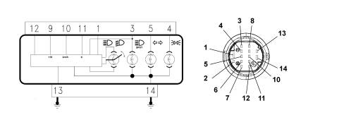
PIN OUT:
1- Dipped headlamps control
3 - Main beam headlamps control
4 - Side lights control
5 - Direction indicators control
9 - Ignition-operated control power supply
10 - Speedometer signal (only on MASTER)
11 - Diagnostic K line
12 - Serial line
13 - Control unit earth connection
14 - Bulb earth connection
Automatic headlamp alignment correcter
As a result of the brightness of the bulb light beam, the vehicle must be equipped with an automatic headlamp alignment correcter to prevent the drivers of oncoming vehicles being dazzled. The device intervenes in certain conditions:
- static type, due to the distribution of the load;
- dynamic type, due to acceleration and deceleration.
The automatic correcter also guarantees improved driving comfort because the area lit is kept stable and your eyes do not have to constantly adapt to the variations in the lighting.
The device consists of:
- a stepping actuator for each headlamp.
- two load sensors, connected to the front and rear suspension, right side.
Correction
This is carried out through the load sensor signal which, connected to the suspension, provide a reading on the vehicle load status.
The control unit is activated at every Key on and resets the headlamps to the exact distance (calculated depending on the vehicle load) which consists of completely lowering and then positioning the reflector.
The load sensor signals are periodically acquired and a suitable average taken in order to readjust the position of the headlamp if necessary (e.g. fuel consumption whilst driving). This adjustment is not immediate, but is filtered over time to avoid undesired corrections (e.g. if there are potholes, uneven road surface, etc.).
This correction is also made with the lights off, so that the moment the beam is switched on it is already correctly positioned.
Load sensors
The sensors are fastened to the vehicle bodyshell, whilst a suitable shaped lever follows the movement of the suspension.
The sensor receives a power supply from the headlamp control unit and provides a linear output signal proportional to the position of the suspension in relation to the bodyshell.
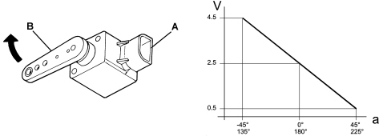
A - Part fastened to the bodyshell
B - Part fastened to the suspension linkage
a - Lever angle
V - Sensor output signal voltage
Adjustment actuator
A stepping actuator inside the light cluster carries out this adjustment. It consists of an electric stepping motor and a worm screw reduction unit which transforms the rotary motion of a hinged push rod into linear motion by means of a ball joint on the reflective surface.
Self-diagnosis
The electronics that manage the system have an autodiagnostic function that continuously checks operation.
The control unit carries out continuous self-diagnosis of system operation. In particular it detects and stores any faults.
The faults memorized in the control unit can be analyzed using the Examiner or other diagnostic equipment.
Recovery
The autodiagnostic management logic also has a recovery function: if errors are detected, the system no longer works properly and therefore the incorrect adjustment of the light beam could be dangerous and dazzle other vehicles.
The light beam is therefore positioned downwards in order not to dazzle anyone, but allows sufficient light to drive safely to a service centre.
Resetting
If the master control unit (in the left headlamp) is replaced, a self-learning procedure must be carried out, connecting to the diagnostic equipment, which makes it possible to automatically reset the system which should recognize the the position of the headlamp correctly aligned in position 0 from where the various adjustments can be set.
Rear light cluster
The rear light cluster is divided into two parts, one fixed one and one moving one on the boot.
The exterior aesthetic appearance is a single polychromatic structure in line with the shape of the vehicle.
The following signals are contained in the light cluster on the fixed part:
- Red brake lights and side lights (double filament).
- White direction indicator and orange reflector.
The following are present in the units on the boot:
- Red coloured side lights
- Red rear fog lamp (driver''s side only)
- White reversing light (passenger side only)
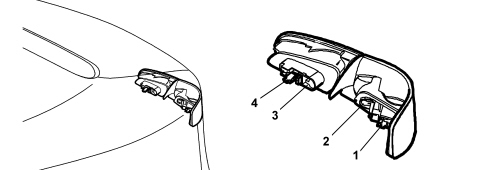
- on the fixed section
1 - Direction indicator: 12V - 21W
2 - Brake light bilux 12V - 21W (P21W-5W)
- on the boot
3a - Rear fog lamp: bulb 12V- 21W (driver''s side only)
3b - Reversing light: bulb 12V- 21W (passenger side only)
4 - Side light 12V - 5W
Number plate light
The number plate light function is achieved by means of two lights fitted using a metal clip and a catch projection fastened to the trim.
Each light is fitted with an all glass 12V - 5W bulb and it should be replaced by removing the light from the trim and the bulb holder from the number plate light, incorporated in the wiring in the rear bumper.
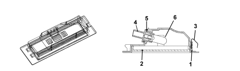
1 - Casing
2 - Lens cover
3 - Clip
4 - Bulb holder
5 - Seal
6 - All glass bulb 12V - 5W
Direction indicators side repeater
To replace the small bulb, push the lens cover manually in the direction of travel in order to compress the fastening clip (5). Release the front section and extract the assembly. Rotate the bulb holder in an anti-clockwise direction and extract it from the lens cover.
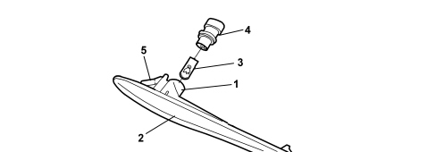
1 - Grey casing
2 - Lens cover
3 - Bulb 12V - 5W (orange)
4 - Bulb holder
5 - Fastening clip
Additional brake light
The function of the additional brake light is produced through the multibulb lamp and light beam coming from the rearscreen serigraphy.
The casing is made from black coloured bayblend and contains the bulb holder which is in one piece and is fastened to the actual casing. The internal current tracks are made from coppper-covered brass and, with the circuit activated, supply 10 small all glass type 12V - 2.3W bulbs.
The light has two housings for the fastening. The red coloured metacrylate lens cover is fitted on the light casing and its shape and contours are such that when the light is switched off it produces a masking effect if looked at from the outside of the vehicle.
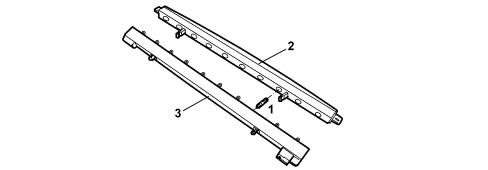
1 - All glass bulb 12V - 2.3W
2 - (Red) lens cover
3 - Parabola casing
Fog lights
The fog lights are located in the lower part of the front bumper. The unit has a screw for adjusting the direction of the light beam.
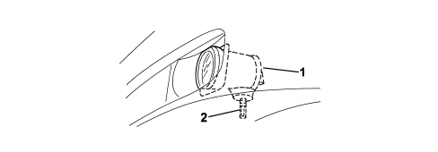
1 - Lamp casing
2 - Adjustment screw
The bulb used for the fog lights function is a halogen H1 type bulb, 12V - 55W.